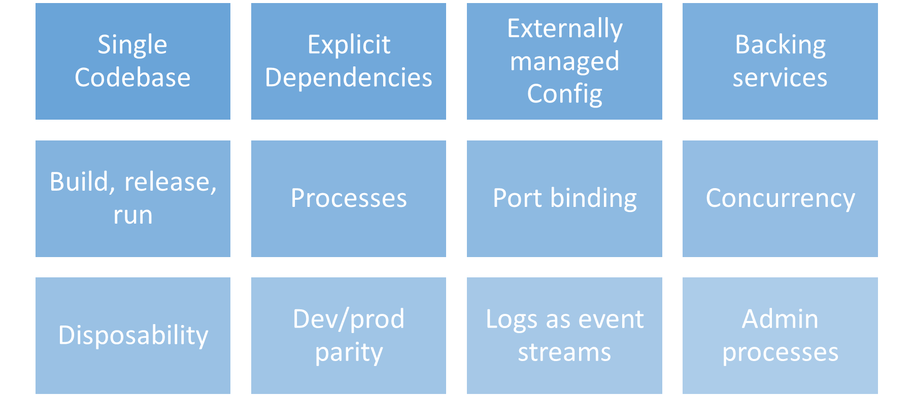
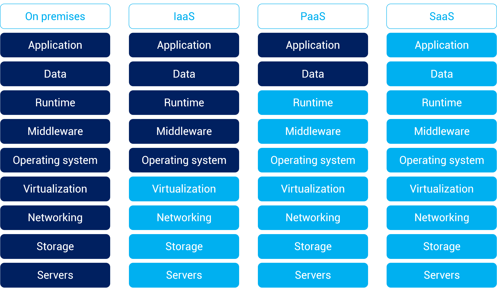
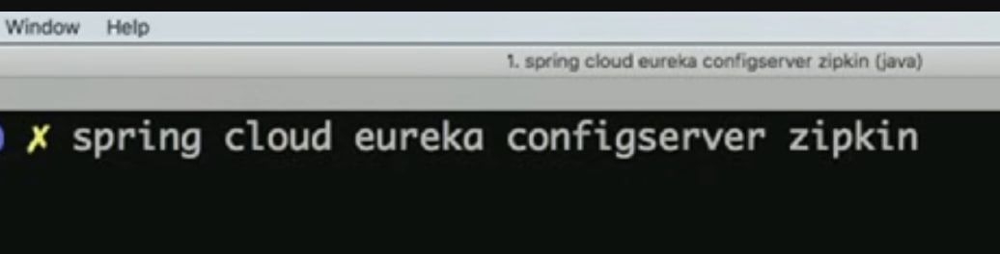
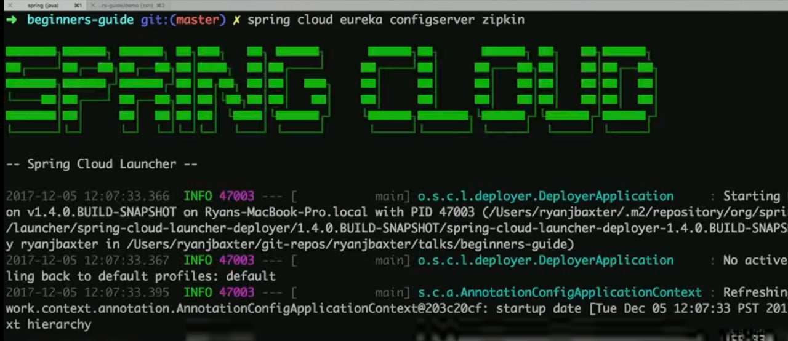
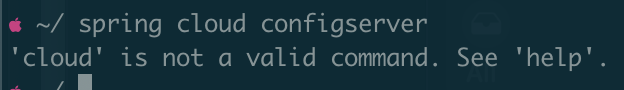
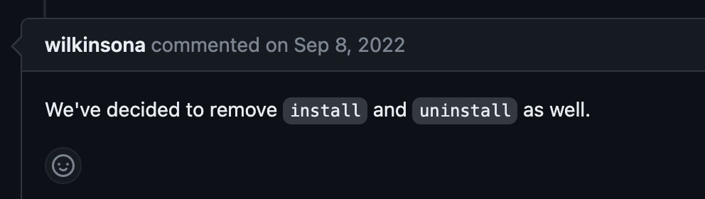
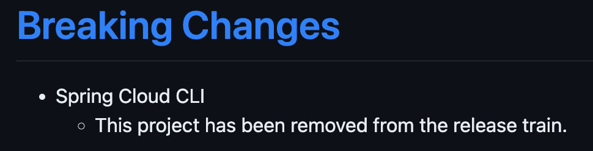
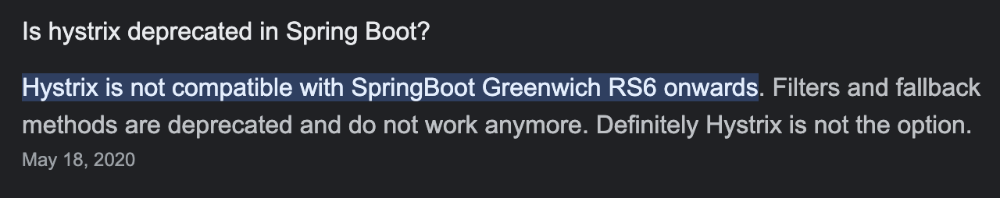

Spring Cloud
И что он в себе несёт
Слайды:
План
1. Что это и зачем
2. Config
3. Discovery
4. Load Balancer
5. Gateway
6. Circuit Breaker
7. Vault
7. Bus
8. K8s Integration
- Ничего не знаю про эти ваши облака, у меня проект не в облаке!
- А Spring Cloud не только для облаков!
12 Factor App
Суть принципов:
IaaS-PaaS-SaaS
| Тип | Примеры |
| SaaS | Netflix, Google Workspace, Dropbox, Salesforce, Cisco WebEx, Concur, GoToMeeting |
| PaaS | AWS Elastic Beanstalk, Windows Azure, Heroku, Force.com, Google App Engine, Apache Stratos, OpenShift |
| IaaS | DigitalOcean, Linode, Rackspace, Amazon Web Services (AWS), Cisco Metapod, Microsoft Azure, Google Compute Engine (GCE) |
Netflix OSS |
|
Spring Cloud Spring Cloud Commons Spring Cloud OpenFeign Spring Cloud Circuit Breaker Spring Cloud Security Spring Cloud Schema Registry Spring Cloud Sleuth Spring Cloud Contract Spring Cloud Cluster Spring Session Spring Session Core Spring Session Data Redis Spring Session MongoDB Spring Session JDBC Spring Session Hazelcast Spring Session for Apache Geode Spring Cloud Gateway Spring Cloud Config Spring Cloud Vault Spring Cloud Bus Spring Cloud Netflix (Eureka) Spring Cloud Zookeeper |
Spring Cloud Consul Spring Cloud Alibaba Spring Cloud Kubernetes Spring Cloud for Amazon Web Services Spring Cloud Azure (Microsoft) Spring Cloud GCP (Google) Spring Cloud for Cloud Foundry Spring CredHub Spring Vault Spring Cloud Connectors Spring Cloud CLI Spring Cloud Skipper Spring Cloud Pipelines Spring Cloud App Broker Spring Cloud Open Service Broker Spring Cloud – Foundry Service Broker Spring Cloud Function Spring Cloud Stream Spring Cloud Stream Applications Spring Cloud Task Spring Cloud Task App Starters Spring Cloud Data Flow Spring Flo |
Historically, the release trains have names, not versions,
Historically, the release trains have names, not versions,
to avoid confusion with the sub-projects.
Historically, the release trains have names, not versions,
to avoid confusion with the sub-projects.
Starting in 2020, the Spring Team moved to Calendar Versioning...
Config Server/Client |
$ git clone https://github.com/vikhani/spring-cloud-webinar-demo.git





Discovery Client |
Load Balancer |
Load Balancer |
Netfix Ribbon, Spring Cloud Loadbalancer
$ git clone -b 2_discovery https://github.com/vikhani/spring-cloud-webinar-demo.git
Gateway |

|
Важно: основан на неблокирующем взаимодействии!
Circuit Breaker |
Circuit Breaker |
Netflix Hystrix, Alibaba Sentinel, Spring Retry, Resilience4J
Circuit Breaker |
Netflix Hystrix, Alibaba Sentinel, Spring Retry, Resilience4J

$ git clone -b 5_circuit_breaker https://github.com/vikhani/spring-cloud-webinar-demo.git
Vault |
Интеграция для HashiCorp’s Vault
$ vault server --dev --dev-root-token-id="00000000-0000-0000-0000-000000000000"
$ vault server --dev --dev-root-token-id="00000000-0000-0000-0000-000000000000"
$ export VAULT_ADDR=http://localhost:8200
$ vault server --dev --dev-root-token-id="00000000-0000-0000-0000-000000000000"
$ export VAULT_ADDR=http://localhost:8200
$ vault kv put secret/application spring.datasource.username={user_name} spring.datasource.password={password}
$ git clone -b 6_vault https://github.com/vikhani/spring-cloud-webinar-demo.git
Bus |
$ docker pull rabbitmq:3-management
$ docker pull rabbitmq:3-management
$ docker run -d --hostname my-rabbit --name some-rabbit -p 15672:15672 -p 5672:5672 rabbitmq:3-management
$ git clone -b 7_bus https://github.com/vikhani/spring-cloud-webinar-demo.git
K8s
K8s
Config Server = Config Maps and Secrets
K8s
Config Server = Config Maps and Secrets
Load Balancing = Service Instance
K8s
Config Server = Config Maps and Secrets
Load Balancing = Service Instance
Discovery Server = Service Instance
K8s
Config Server = Config Maps and Secrets
Load Balancing = Service Instance
Discovery Server = Service Instance
Discovery Client = DNS For Service Host Name
Spring Cloud |
K8s |
| Java | Generic платформа, основанная на контейнеризации |
| Java | Поддержка полного цикла работы микросервисных приложений |
| Java | Большое коммьюнити, используемость на больших масштабах |
| Java | Generic платформа, без специализации под конкретный стек |
| Поддержка целиком ложится на джавистов | Может быть плохо изучена джавистами |
springcloud/spring-cloud-kubernetes-configserver:3.0.4
springcloud/spring-cloud-kubernetes-discoveryserver:3.0.4
$ git clone -b 8_k8s https://github.com/vikhani/spring-cloud-webinar-demo.git